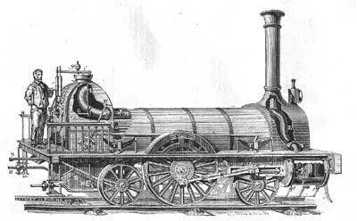

Pagina Principale |
Sviluppo Industriale |
Conseguenze Sociali ed Ambientali |
|---|
Gli sviluppi della scienza e della tecnica
|
Si sviluppa l’industria chimica
Nel processo di sviluppo industriale, scienziati e tecnici hanno giocato un ruolo chiave, specialmente nell'Industria chimica. La crescente richiesta di agenti sbiancanti, coloranti e sgrassanti nelle fabbriche tessili ha spinto a innovazioni. L'uso di metodi tradizionali, come l'esposizione al sole per sbiancare tessuti, è diventato impraticabile, portando all'uso di composti chimici prodotti in laboratorio.L'evoluzione chimica ha coinvolto anche altri settori produttivi. Tra la fine del Settecento e l'inizio dell'Ottocento, importanti scoperte furono fatte da chimici come Antoine-Laurent Lavoisier, considerato il padre della chimica moderna. Le sue scoperte includono la comprensione che l'aria è una miscela di gas, l'identificazione dell'ossigeno e dell'azoto, la composizione dell'acqua con idrogeno e ossigeno, e l'idea fondamentale che una sostanza è un elemento se non può essere ulteriormente decomposta. Questi contributi scientifici hanno avuto un impatto significativo sull'industria e sulla produzione.  Il vapore è applicato alle navi
Lo sviluppo industriale vide una rivoluzione nei trasporti, particolarmente nell'applicazione del vapore alla navigazione. Mentre i primi tentativi di applicare il motore a vapore a carri e carrozze non ebbero successo, la navigazione a vapore si rivelò promettente. Prima del vapore, la navigazione si basava sul vento o sui remi. Con l'introduzione del motore a vapore, diventò possibile navigare anche in assenza di vento o controvento. Il primo piroscafo fu varato in Francia nel 1783, ma la navigazione fluviale ebbe uno sviluppo significativo in America, dove il battello a vapore Clermont di Robert Fulton iniziò viaggi regolari fra New York e Albany nel 1807. Nel 1818, la nave americana Savannah attraversò l'Oceano Atlantico in diciannove giorni. Tuttavia, le navi a vapore continuarono ad utilizzare le vele per decenni, poiché trasportare i grandi carichi di carbone necessari per le traversate era una sfida  E ai treni
Lo sviluppo delle locomotive a vapore fu rapidissimo grazie agli ingegneri inglesi George Stephenson e suo figlio Robert, che progettarono macchine leggere ed efficienti e un nuovo sistema ferroviario. Nel 1825, entrarono in funzione in Inghilterra la prima linea ferroviaria del mondo, la Stockton-Darlington, lunga circa 40 km. I Stephenson costruirono The Rocket, una locomotiva capace di raggiungere una velocità media di 36 km/h, simboleggiando l'era dei trasporti a vapore. Nonostante iniziali proteste e timori, l'esperienza dimostrò che erano infondati, conducendo alla creazione di una fitta rete ferroviaria in Europa. The Rocket e il battello Clermont divennero icone della nuova era dei trasporti a vapore. 
Si annuncia una nuova energia: L’elettricità
La nuova forma di energia, l'elettricità, era già annunciata nel Settecento. Il termine derivava dal greco "elektron", riferito all'ambra, una resina fossile in grado di elettrizzarsi e attirare piume e pezzetti di carta quando strofinata. Inizialmente utilizzata per giochi da salotto, l'elettricità divenne più praticamente sfruttata grazie agli esperimenti di Benjamin Franklin sugli effetti atmosferici e all'invenzione della pila da parte di Alessandro Volta nel 1799, aprendo la strada all'utilizzo dell'elettricità nell'industria.  |